Qualidade de grande, cara de pequena.
Usinagem CNC sob encomenda em Botucatu (SP), com 14 pessoas, 4 tornos, 2 centros de usinagem e sala de medição. Atende aeronáutica, carrocerias, implementos agrícolas e manutenção de fábricas. Cliente e números são fictícios, criados para este estudo.
O que estava errado
- Logo com engrenagem de banco de imagens.
- Orçamento em Word, cada um com uma formatação.
- Caminhão, uniforme e etiqueta cada um com uma cor.
- Na homologação, perdia para concorrentes que pareciam mais organizados.
Como os concorrentes se apresentam
- Engrenagem, chave inglesa ou fagulha.
- Azul e vermelho, fonte itálica "veloz".
- Frases como "excelência e qualidade incomparável".
- Todos se parecem. Nenhum fala de medida.
Quem decide é o engenheiro.
O comprador precisa de prazo e documentação; o engenheiro precisa da peça certa na primeira vez. A marca fala com os dois na língua que eles usam no trabalho: números, cotas e relatório.
| Propósito | Fazer a indústria do interior confiar numa peça antes de medir. |
|---|---|
| Posicionamento | Para engenheiros e compradores da indústria do interior paulista, a Tolera é a usinagem de precisão que entrega a peça na cota e no prazo, porque mede cada lote e envia o relatório junto. |
| Personalidade | Precisa, não fria. Confiável, não engessada. Direta, não seca. |
| Ideia central | A tolerância como promessa: toda peça tem uma medida e uma folga permitida, e a Tolera vende a certeza de ficar dentro dela. |
Três ideias em preto e branco.
Antes da cor, a forma. Cada caminho nasce de um elemento do desenho técnico e foi testado em tamanho de perfil (110 px) e de favicon (16 px).
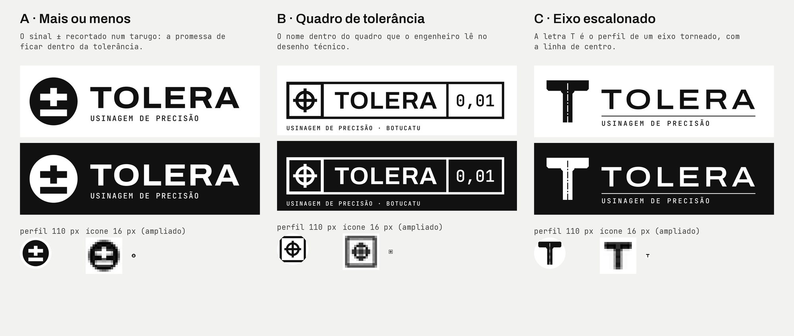
Desenhado com régua.
O símbolo foi refeito numa grade de 10 × 10 com chanfros a 45°, canal de anel e a linha de centro traço-ponto que passa além da peça, como no desenho técnico. Assim deixou de parecer só uma letra.
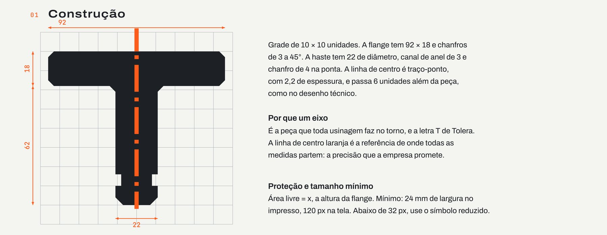
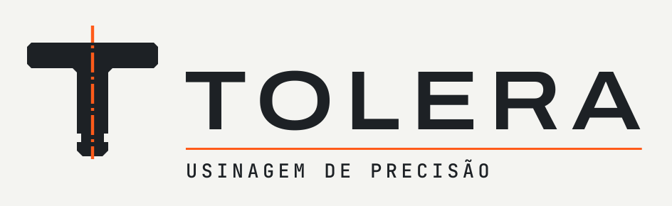


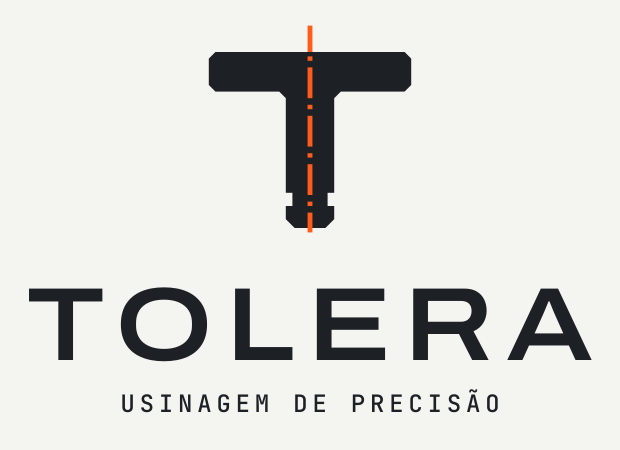

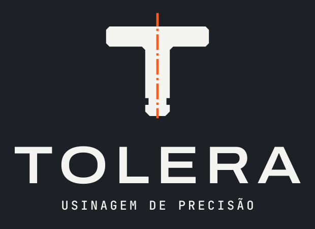

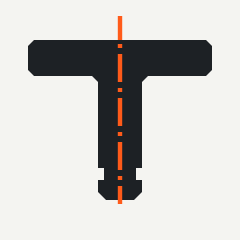

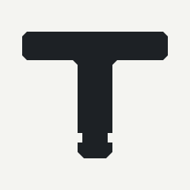

Paleta
Contraste medido: grafite sobre papel 14.7:1, laranja sobre grafite 5.2:1. Laranja sobre papel dá 2.8:1, por isso o laranja nunca vira texto pequeno no fundo claro: fica só em linhas, cotas e chamadas grandes. Clique numa cor para copiar o HEX.
Tipografia
Archivo Expandida
Títulos em peso 580 a 640 e largura 118: firme e larga como letra de placa de máquina. No texto corrido, largura normal e peso 420. Gratuita (Google Fonts).
JetBrains Mono
Medidas, códigos de peça e lotes. Lembra visor de instrumento e relatório, e reforça a mensagem de que tudo é medido.
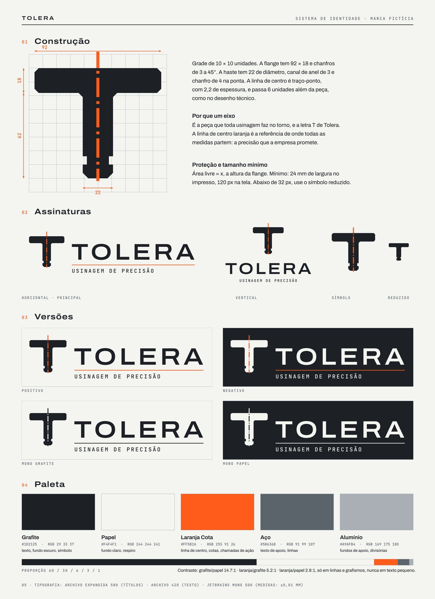
Onde o engenheiro vê a marca.
As peças que mais pesam numa homologação: a proposta, o relatório que acompanha o lote e a etiqueta na caixa. A cota laranja aparece em todas, sempre onde há medida.
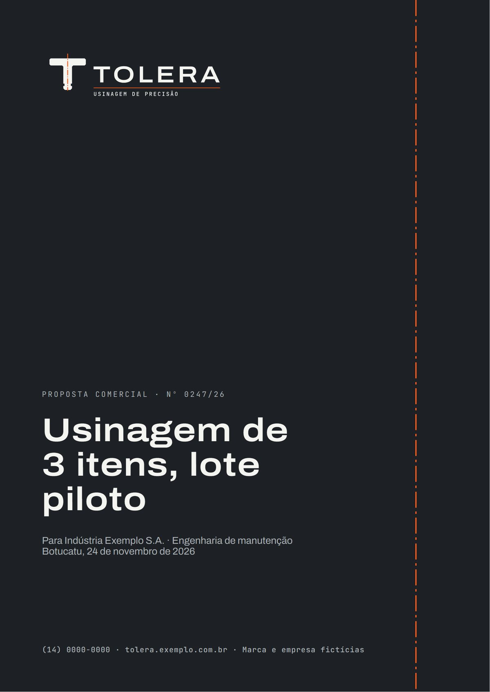
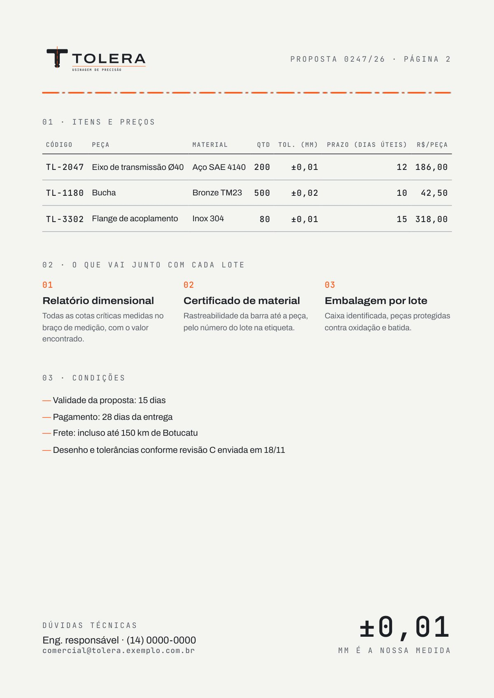
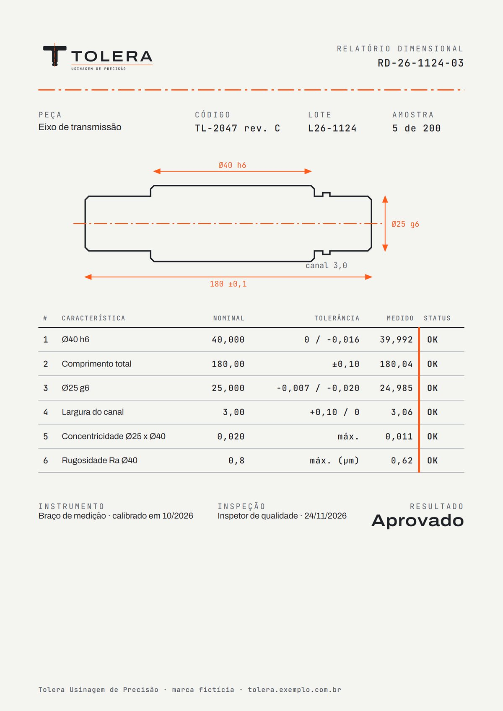
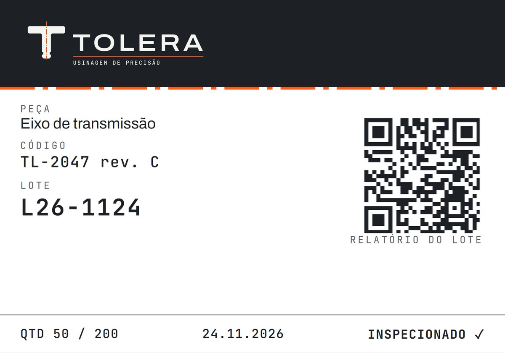
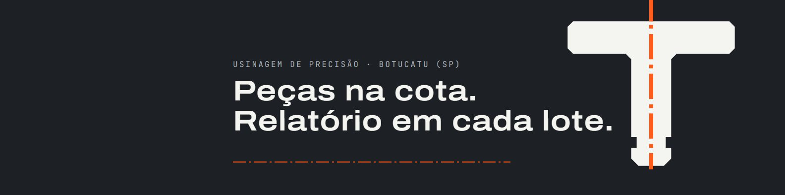
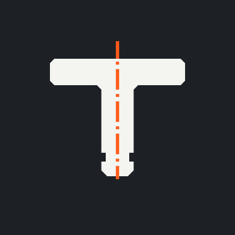
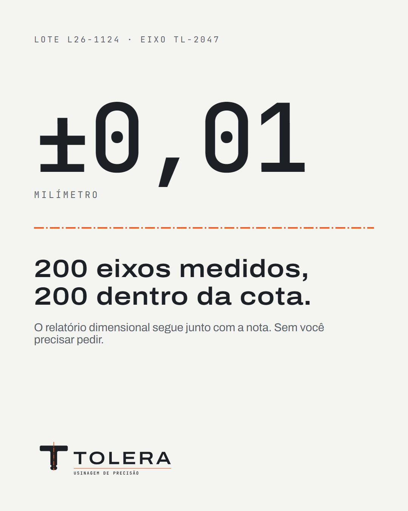
O eixo nasce no torno.
Logo animado de 4 segundos para abertura de vídeo, apresentação e redes. Sai em 16:9, 1:1 e com fundo transparente (ProRes 4444) para usar sobre gravações da fábrica.
- A linha de centro laranja desce.
- O material aparece simétrico a partir do eixo, como numa peça sendo torneada.
- O nome entra da esquerda para a direita.
- O traço laranja corre sob o nome.
- O subtítulo aparece.
Pronto para a gráfica.
Logos em SVG com texto em curvas, PDFs de impressão e vídeo. Na entrega real, a pasta vem organizada por uso: impressão, redes e site.